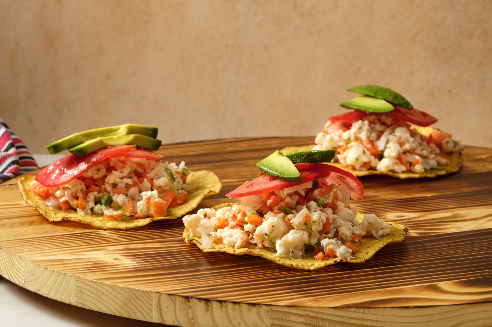

Ceviche
Ingredientes:
500 g de camarones crudos, pelados y desvenados
1/2 cebolla morada, finamente picada
1 jalapeño fresco, sin semillas y picado en cubitos pequeños (ajusta al gusto)
1 pepino mediano, pelado y cortado en cubos pequeños
1/2 taza de cilantro fresco, finamente picado
1 taza de jugo de limón verde (aproximadamente de 6 a 8 limones)
1 taza de Clamato
Sal y pimienta al gusto
Tostadas o galletas saladas para acompañar
Preparación:
Preparar los ingredientes: Comienza picando todos los ingredientes: los camarones deben estar limpios, pelados y cortados en trozos pequeños si lo prefieres. La cebolla, el jalapeño, el pepino y el cilantro deben estar finamente picados para lograr una textura uniforme en cada bocado.
Mezclar los ingredientes: En un recipiente grande de vidrio o acero inoxidable, combine los camarones con la cebolla, el jalapeño, el pepino y el cilantro. Mezcla bien para distribuir los sabores de forma pareja.
Agregar los líquidos: Vierta el jugo de limón fresco sobre la mezcla. Este paso es importante porque el ácido del limón “cocina” los camarones, cambiando su color y textura. Después, agrega el Clamato, que le dará un sabor más profundo y ligeramente dulce al ceviche. Mezcle todo suavemente hasta que los ingredientes estén bien incorporados.
Refrigerar y marinar: Cubra el recipiente con plástico adherente o una tapa y colócalo en el refrigerador. Deja que repose entre 20 y 30 minutos, o hasta que los camarones se vean completamente rosados y opacos. Si lo deseas más marinado, puedes dejarlo un poco más de tiempo.
Servir: Prueba y ajusta la sazón con sal y pimienta al gusto. Sirve el ceviche bien frío acompañado de tostadas crujientes, galletas saladas o incluso con rodajas de aguacate si quieres un toque más cremoso.